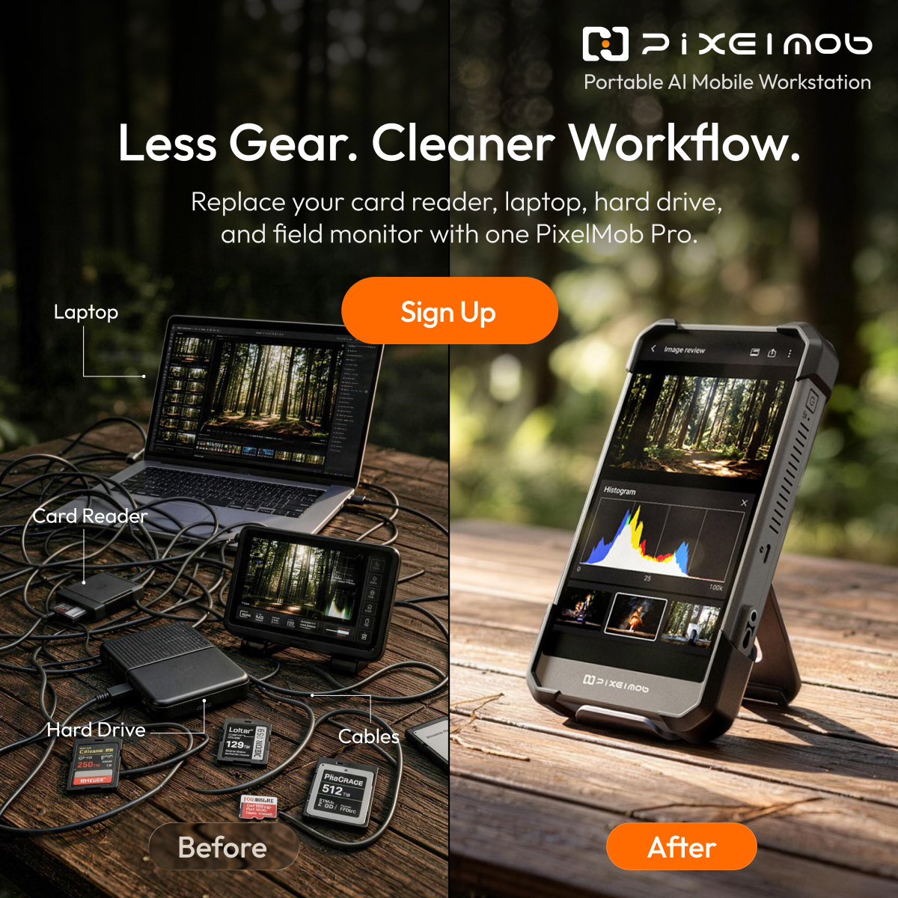
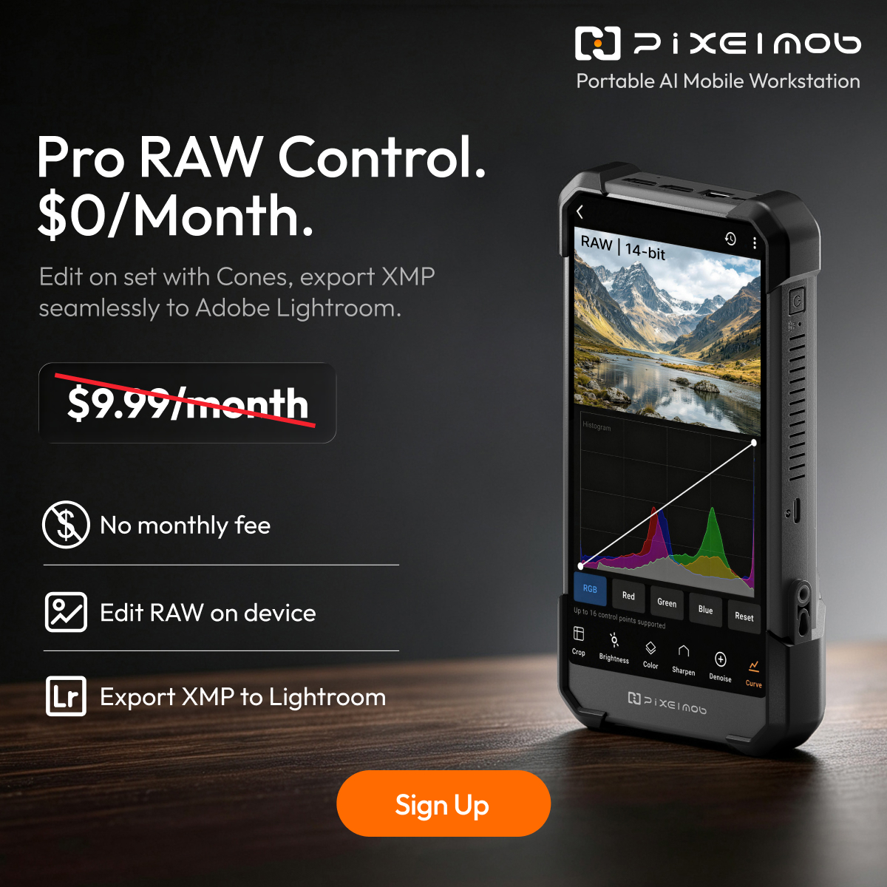

PIXELMOB · KICKSTARTER · 2026
PixelMob 众筹广告全周期复盘
覆盖前测、预热、上线至众筹结束
Standard为标准版，Pro为专业版；众筹档位对应不同版本、套餐或优惠价格。金额均为美元。ROAS为广告归因销售额÷广告消耗：例如消耗$1000带来$3000归因销售，ROAS为3。CPA为取得一次目标转化的广告成本，CPL为取得一个邮箱的成本；CTR为点击率，CPC为每次点击成本，CVR为对应链路的转化率，AOV为平均订单金额。
广告分工与用户路径
本项目主要在Meta的Facebook、Instagram及Google/YouTube投放。广告由三部分组成：优化目标决定平台寻找哪种行为；人群决定覆盖谁；素材和落地页决定用户看到什么、下一步去哪里。购买、发起结账、选型问卷是不同任务；再营销、兴趣和智能拓量则是不同的找人方式，可以相互组合。
| 广告任务 | 后台目标与用户路径 | 本项目主要投给谁 | 用什么内容、看什么结果 |
|---|---|---|---|
| 邮箱留资 | Leads / Subscribe：广告→邮箱页→留下邮箱→调研、邮件或社群触达 | 专业摄影、备份、户外与创作者硬件兴趣用户 | 备份、整理、工作流等价值介绍；看邮箱数量、成本及后续定金 |
| 定金购买 | Sales / Purchase：广告→独立站定金页→支付10美元定金 | 前测兴趣组、后续专业场景组、部分相似与再营销人群 | 明确用途、版本与定金权益；看定金订单、CPA和扩量后成本 |
| 众筹购买 | Sales / Purchase：广告→Kickstarter众筹页或对应认捐档位→提交支持订单 | 预热定金用户、官网/众筹页访客，也测试兴趣与智能拓量用户 | 首发优惠、真实工作流、红人实测、限时权益；看归因订单、销售、CPA和ROAS。此时订单是认捐，结束后统一扣款 |
| 发起结账 | Sales / Checkout：广告→众筹页→进入支持/结账流程 | 以内容创作者、活动摄影等新增兴趣用户为主 | 用工作流与红人视频吸引进入购买流程；看发起结账成本及后续购买 |
| 选型问卷 | 以完成选型结果为主要优化事件：广告→官网选型页→推荐Standard或Pro→跳对应众筹档位 | 先用浏览、视频观看与互动人群，后期拓展非美国组合 | 解释卡型、备份和工作需求；看完成选型、进入众筹、发起结账与订单 |
| 添加支付信息测试 | Sales / Add Payment Info：广告→众筹页→添加支付资料 | 首发后计划以智能拓量及专业兴趣人群测试 | 尝试在发起结账与购买之间寻找转化机会；实际消耗$123.11，无事件和订单，关闭 |
| 红人内容加热 | Boost：用合作创作者内容投广告，可放在购买、发起结账或视频观看任务下 | 兴趣组、访问组、视频互动组等 | 放大实测视频或二剪内容；按所用目标分别评价订单、结账或观看 |
购买与发起结账广告的差别，在于平台用哪个行为寻找用户。发起结账代表进入支持流程，购买代表提交认捐订单。例如，同样一段工作流视频，购买广告寻找更可能提交订单的人，发起结账广告寻找更可能进入支持流程的人；本项目中，两种投法的成本与订单结果有明显差异。
人群如何建立
| 找人方式 | 本项目实际使用的设置 | 用途及实际变化 |
|---|---|---|
| 兴趣人群（IG，Interest Group） | 用摄影、设备、软件和应用场景相关兴趣建立广告组。IG在这里指兴趣组，并非Instagram版位 | 用于寻找尚未接触产品的新用户；前测由泛硬件转向专业摄影和备份，后期增加职业×场景 |
| 再营销（RT） | 将已付定金、邮箱订阅、官网访问、众筹页访问、视频观看、社媒互动分组 | 同为接触过产品的用户，意向程度不同；首发定金组强，平销官网/众筹访客更强，末期活动组有成交 |
| 相似人群（LLA） | 以PixelMob或UnifyDrive已购用户作种子，测试1%或3%相似人群 | 让平台寻找与种子特征接近的新用户；预热1%组定金CPA $43.24，正式认捐阶段部分测试无单后停用 |
| 智能拓量（AI / ASC） | 使用自动拓量，以及以UnifyDrive、PixelMob已购数据为基础的受众方案 | 由平台扩大寻找购买用户；曾因低效停用，更换内容并恢复测试后取得订单。AI是账户投放标签，与产品AI选片功能不同 |
兴趣拉新方案中，将已订阅、定金购买及官网访问等已知用户排除，另建再营销组承接；首发时则重点召回已付定金用户。预算因此可以区分“找到新用户”和“促成已有用户购买”。
一、人群选择：付费需求比兴趣标签更有用
专业摄影和备份需求是本项目较明确的付费方向。泛硬件用户容易留下邮箱，却不一定愿意付钱；已付定金、访问过产品页和只看过视频的人，也需要分开投放。
1.1 兴趣怎么选，预算怎么分
前测覆盖美国、加拿大、澳大利亚、英国、德国，专业摄影、数据备份、泛硬件、户外摄影和现场记者分别建组。人群对比采用相近素材，避免把素材差异误判成人群差异。
前测以20—64岁、全性别开始测试，再根据实际订单调整。专业兴趣、泛硬件与场景人群分组，使用相近素材对比。下面是测试方案中的具体兴趣词示例，组名概括定位，词表用于后台选取相关兴趣。
| 前测广告组 | 方案中的兴趣词示例 | 广告表达与后续结果 |
|---|---|---|
| 专业摄影师 | Professional photographer、Photography、Digital photography、Portrait photography | 备份、RAW、现场工作流；41笔定金，CPA $64.61 |
| 数据备份需求用户 | Data security、Data storage device、Computer data storage、NAS | 多卡、多来源素材集中保存；同期50笔定金，CPA $58.77 |
| 创作者硬件兴趣 | GoPro、DJI、Action camera、Sony Alpha、Canon EOS、Nikon | 设备整合与便携；邮箱便宜，但定金CPA升至$101.52，关闭原组 |
| 户外摄影 | Outdoor photographer、Landscape photography、Wildlife photography、Travel photography | 户外与离场前确认素材；作为实际拍摄场景持续测试 |
| 现场记者 | Journalism、Photojournalism、News broadcasting | 现场传输与素材管理；首轮CPL $9.15，后续降低优先级 |
预算初期由系统分配后，泛硬件组取得大量花费；随后改用广告组独立预算（ABO），为专业与场景人群保留测试机会。广告组内比较素材，广告组之间比较付费成本，逐步形成专业摄影与备份需求两条核心方向。
1.2 便宜邮箱未必能带来便宜定金
最初创作者硬件兴趣用户曾占美国/加拿大约90%的预算，但调研问卷价格接受度偏低。预算分配改为广告组独立预算（ABO），为专业摄影、户外与备份人群保留独立测试预算。在付费测试中，创作者硬件兴趣用户消耗$913.72、9笔定金、CPA $101.52，已被关停，等待页面调整后复测；说明算法偏好的便宜邮箱人群，并不一定适合承担定金任务。
| 7月17—22日直投链路 | 表现 | 判断与处理 |
|---|---|---|
| 数据备份需求用户 | 50笔定金，CPA $58.77 | 日花费约$200增至$500，成本相对稳定，成为核心承量人群 |
| 专业摄影师 | 41笔，CPA $64.61 | 与备份用户合计91笔，占直投购买约68.9% |
| 创作者硬件兴趣用户 | 9笔，CPA $101.52 | 低价留资优势没有延续至付费，暂停原组合 |
| 再营销 | CPA $119.29，频次5.09 | 初期表现后衰退，池子较小，缩量维持 |
| 加拿大 / 澳大利亚 | CPA $47.62 / $50.32，分别10笔/14笔 | 具备一定订单基础，作为非美国扩量验证方向 |
1.3 用职业和场景继续找新客
| 8月13—20日定金端 | CPA / 表现 | 调整 |
|---|---|---|
| 整体 | CPA $121.74降至$83.13，下降31.7% | 新增专业场景人群与涨价倒计时素材共同改善转化 |
| 创意总监 | $55.28 | 作为专业职业方向继续承量 |
| 专业摄影×旅行 | $68.49 | 扩展“摄影职业×使用场景” |
| 已购种子1%相似人群 | $43.24 | 已有付费种子后的相似人群取得效果 |
| 摄影×婚礼 | $46.31，仅2笔 | 保留测试，样本不足以大幅放量 |
| 人像摄影工作室 | $118.34 | 关停原组合 |
| 互动用户再营销 | $110.11，频次7.03 | 高重复触达抵消意向优势，再营销关停 |
本轮新用户贡献约88%的定金购买、CPA $79.34。同样是“再营销”，此时未体现成本优势；小池子反复触达会抬高获客成本。扩量重心因此转向新的专业场景组合，等待互动池补充后再判断再营销恢复，而非持续加压旧用户。
国家上，美国定金CPA $81.69，承担主要预算；澳大利亚虽有活动摄影人群出单，但仍高于当版$91目标，维持测试而未直接提高预算。邮箱端美国/加拿大成本相对稳定，英国/德国原专业摄影组偏高，转测天文摄影、演唱会摄影。国家预算随各组的定金成本与订单量调整，美国承担规模，其他国家逐组测试。
1.4 定金用户适合召回，陌生用户需要更多说服
| 8月28—31日广告板块 | 效果 | 发现 |
|---|---|---|
| 购买广告整体 | 消耗$13,896.41，ROAS 4.49 | 承担当时上线广告成交 |
| 再营销购买广告 | 52笔，ROAS 6.44 | 主要成交来源；核心已付定金人群的召回价值较高 |
| 兴趣人群购买广告 | 12笔，ROAS 2.28，CPA约$416.99 | 新客成交成本明显高于再营销，后续继续筛选组合 |
| 智能拓量 | 4笔，ROAS 3.84，AOV约$1048 | 有初步信号；后续新增消耗ROAS约2.25，需观察边际变化 |
| 发起结账 | 297个，成本$4.53 | 补充Kickstarter访问池，尚未形成同等购买表现 |
已付定金再营销人群贡献35笔、ROAS 16.28，而非核心再营销合计约1.86。相比普通浏览或视频观看用户，他们已用定金表达意向，首发时主要需要得知项目上线、优惠入口及购买期限。
国家上，美国贡献57笔、ROAS 4.80；澳大利亚 8笔、5.58，是当时较明确的扩展方向。加拿大/德国虽有发起结账却无认捐订单，关闭后将预算转向美国；英国仅1笔、ROAS 1.02，不具备扩量条件。日本Pro有3笔、Standard无单，暂作版本方向信号。
1.5 再营销也要区分接触深度
访问过官网或众筹页的人，表现好于订阅和泛兴趣用户。投放将不同接触深度的用户分组，分别比较成交成本。
| 人群/目标 | 9月10—16日结果 | 动作及后续 |
|---|---|---|
| 再营销购买广告 | 消耗$6514.47，21笔，ROAS 3.51 | 成为核心预算承接来源 |
| 官网访问用户再营销 | 12笔，ROAS 4.90，CPA $239.91 | 优先保留 |
| 众筹页访问用户再营销 | 4笔，ROAS 3.20 | 作为近期访问用户承接，继续监测频次 |
| 订阅再营销 | 3笔，ROAS 1.79，CPA $510.58 | 比页面访问再营销弱，小预算观察 |
| 兴趣人群购买广告 | 消耗$1302.67，无单 | 暂停该批直投组合 |
| 线上内容创作者 发起结账 | 335个发起结账，成本$3.12，并有1笔订单 | 保留约$100/日，补充新用户池 |
35—44岁再营销用户在当时消耗较高、成交偏弱，后续预算转向20—34岁和45—64岁，并按年龄分别投放。拆分年龄组后，不同年龄的官网访问用户、众筹页访问用户和订阅再营销继续有订单，再营销购买广告共11笔、ROAS 2.98。拆龄后仍有成交，但每单成本基本持平，阶段性成果主要是控制费用、保留有效订单。
实际形成三种分工：新增用户用发起结账广告补充；已经到官网或众筹页、尚在犹豫的用户用购买广告召回；视频看过或社媒互动过、仍需理解版本的用户用选型问卷教育。不同接触深度的用户分组后，才看得出哪个环节继续投入、哪个环节退出。
1.6 智能拓量和海外市场，用新内容重新验证
冲刺周的购买广告消耗$28,579.89，94笔、ROAS 3.26；智能拓量消耗$8963.24、39笔、ROAS 4.29，再营销消耗$8235.64、29笔、ROAS 3.44。再营销活动组14笔、ROAS 5.55，优于部分常规访问组，说明接近决策的用户对权益节点反应更强。
非美国随活动和新素材恢复测试。购买广告中澳大利亚 4笔、ROAS 3.77，加拿大 3笔、3.20，英国 2.24；德国仅1笔、1.40，关闭。国家策略经历了首轮测试、收缩美国、后期复开，复开的依据是新内容与实际成交，而不是把前期被停国家永久排除。
选型问卷在部分非美国组合中也开始取得订单：澳大利亚当期3笔、ROAS 3.01，英国1笔、1.44。相较收缩投放时，后期测试已从统一收缩转为按国家和人群选择性恢复。
冲刺阶段的实际配置围绕“有效购买组扩大＋新内容快速复用”。美国智能拓量购买组承担新增订单，官网/众筹访问与活动再营销承接犹豫用户，澳大利亚、加拿大、英国等重新测试。内容创作者和活动摄影的发起结账广告继续补充新用户，红人测评则按购买、结账和选型三个目标分别测试。
1.7 新客测试具体落在哪些组合
| 测试组合 | 人群选择 | 入口和内容 | 结果与处理 |
|---|---|---|---|
| 兴趣人群购买广告 | 线上内容创作者45—64岁/20—34岁、活动摄影20—34岁、影像编辑软件兴趣用户 | 众筹页；活动权益与实拍工作流 | 合计16单，ROAS约2.31—2.53，保留出单组 |
| 高意向访问用户购买广告 | 众筹页访问、45—64岁官网访问用户 | 众筹页；活动、价格与工作流 | 成为主要成交方向，后续增加预算 |
| 发起结账拉新 | 45—64岁退休摄影兴趣组、线上内容创作者；其他场景作为补充 | 众筹页；红人工作流视频 | 退休组801次、单次$3.40，内容创作者678次、$3.58 |
| 选型问卷教育 | 视频观看、官网访问、社媒互动用户 | 官网短/长选型页→推荐档位 | 结果数量增加，进入结账与订单仍少，未成为成交主力 |
退休摄影兴趣组按年龄与兴趣建立。后续测试中，发起结账侧进一步收敛到45—64岁活动摄影和内容创作者：分别477次/$3.27、452次/$3.19；泛备份组成本$7.48，降低预算。同样的备份需求在定金测试中有效，在这一结账组合中却转弱。
二、广告目标：预算应跟着购买走，而不只跟着便宜行为走
本项目的主要弯路，是发起结账和选型问卷获得了较多预算，却没有带来相应的直接订单。邮箱、答题和结账各有用途，扩量时仍要看最终有多少人买。
2.1 邮箱收集需求，定金验证支付意愿
前测累计收集2559个邮箱，花费$5479.84，每个邮箱$2.14；但邮件后续促成定金的效率弱于广告直接进入定金页。两条路径分别是“广告→邮箱→邮件→定金页”和“广告→定金页”。
| 投放期间 | 直投定金 | 邮箱后续定金 | 对投放结构的影响 |
|---|---|---|---|
| 截至7月16日 | 27笔，CPA约$32.4—$40 | 2笔，CPA约$327 | 早期直投付费明显更强，增加直接定金验证 |
| 7月17—22日，排除故障日期 | CPA $71.24 | CPA $453.59 | 邮箱保留沉淀价值，购买主任务转向直投 |
| 前测总结累计 | 消耗$7920.45，114笔，CPA $69.48 | 72笔 | 直投有实际承量；邮箱仍需教育与召回 |
直投从最初约$32—$40上升至累计约$69，体现了扩量后获取更多付费用户的成本上升。邮箱链路虽能低成本收集兴趣，但增加了邮件送达、打开、点击和再次决策的损耗。由于邮件触达打开率偏低，随后将邮箱用途更多转向邀请进组、持续教育及Save页触达。
2.2 购买广告贡献了大部分成交，却一度只拿到四成预算
购买广告与结账、选型广告同时扩量时，预算和成交出现明显错位：购买广告只占约四成消耗，却贡献绝大多数归因销售。
| 9月24日—10月8日 | 消耗 | 直接结果 | 结构判断 |
|---|---|---|---|
| Meta整体 | $35,786.87 | 41笔，销售$40,535，ROAS 1.13 | 较对照窗口消耗+59.36%，归因订单仅+2.50% |
| 购买转化广告 | $14,766.96 | 39笔，销售$38,577，ROAS 2.61 | 约41.3%预算贡献95.2%归因销售 |
| 发起结账 | $12,435.23 | 2884个发起结账，成本$4.31；1笔订单 | 扩大意向池，但直接成交有限 |
| 选型问卷 | $8584.68 | 1752个完成选型，167个发起结账，1笔订单 | 完成选型成本$4.90，发起结账成本$51.41，后链路损耗较大 |
发起结账与选型问卷合计约58.7%的Meta消耗，直接归因订单合计2笔。当期大量预算投入了解产品和发起结账环节，直接购买仍集中在购买转化广告。后续调整因此转向增加已出单组合的预算。
项目整体日销同期有增长，但广告归因销售没有同步增加，退单后纯广告费率达到40.39%。这一阶段扩大了触达和意向池，购买效率仍有压力；自然销售增长中有多少来自教育型广告，尚缺少足够证据。
2.3 增加已经出单的购买组合，效率开始修复
| 10月8—14日Meta | 消耗 | 归因订单 | 效率与链路结果 |
|---|---|---|---|
| 整体 | $29,631.03 | 54 | ROAS 1.79 |
| 购买转化广告 | $16,196.25 | 51 | ROAS 3.09 |
| 发起结账 | $7560.33 | 1 | 前端2080个发起结账，成本$3.63 |
| 选型问卷 | $5874.45 | 2 | 2008个完成选型、149个发起结账，销售$2274 |
购买广告加大投入后，订单增长快于消耗。购买广告预算占比约54.7%，高于前述扩量期的约41.3%，同时成交仍由购买广告主导。
再营销 23笔、ROAS 4.74，主要来自众筹页访问用户和45—64岁官网访问用户；兴趣组24笔、ROAS 2.17，人像摄影工作室与影像编辑软件兴趣用户表现较好。恢复测试的智能拓量组消耗$1007.06、4笔、ROAS 4.96，开始具备继续测试的理由，但当时仍是小样本。
素材上，Adam 红人内容加热在购买广告中贡献9笔、ROAS 3.08；蜗牛云台image161为8笔、6.69，价格差image164/165合计6笔。发起结账则由Chasing、James等内容承担较多结果。Adam的发起结账成本$4.34高于整体$3.63，但购买广告端有实际订单，说明应将有效内容分配给其更适合的目标，而非统一按前端成本分预算。
2.4 Google合集改善了引流，成交价值仍需单独判断
扩量测试中，Google消耗$13,376.98，其中红人合集$2942.07取得37,468次点击，CPC约$0.08、CTR 5.65%；单一红人广告CPC约$8—$10、点击率约0.04%，引流弱。页面引流预算因此优先转向红人合集及合集再营销。
调整投放后的一轮统计中，Google消耗$8424.92，34,629次点击，CPC约$0.24；合集CPC约$0.08、合集再营销约$0.11，仍是较有效的流量来源。合集降低了页面引流成本。Google在这里的明确成果是带来访问；后续应将这些访问与认捐连起来看，判断引流预算是否划算。
三、广告内容：具体任务、真实演示和购买理由各有作用
有效素材并不是把功能讲得更全，而是让用户知道它能解决什么麻烦、实际怎样使用、为什么值得现在购买。同一内容还要放进合适的广告目标，才能发挥作用。
3.1 备份和免订阅RAW，给出了具体的购买理由
定金测试中，多设备备份Standard/Pro的单笔定金成本分别为$41.99/$48.25；免订阅RAW消耗$1832.31、30笔，CPA $61.08。RAW素材CTR只有2.30%，但付费表现较好，说明成交素材不必拥有最高点击率。相反，“快速备份”邮箱CPL $2.78，直投定金CPA却达$273.92，留资与付费出现明显分化。


原图展示了两种更具体的购买理由：减少设备与操作，以及减少软件订阅支出。
3.2 同样讲工作流，表达是否具体会拉开成本
| 8月13—20日定金素材 | CPA | 复盘判断 |
|---|---|---|
| 免订阅RAW编辑2 | $54.23 | 明确成本利益与后期任务，继续做变体 |
| 室内工作流 | $62.64 | 真实操作比抽象工作站概念更直接 |
| 素材整理 | $68.08 | 具体任务形成购买信号 |
| 多设备备份2 | $69.38 | 与用户现有设备联动的价值仍有效 |
| 多设备备份车尾箱版 | $104.64 | 同一主题换场景后未必同样高效 |
| 随时开展工作 | $294.91 | 泛化便携工作主张缺少足够购买推动力，汰换原版本 |
3.3 大屏参数不够，要拍出现场怎么用
在平销素材测试中，“免订阅RAW编辑Standard”消耗$1512.41、10笔、ROAS 7.99；新增的“大屏监看×NP-F续航Pro”和“Kumar实拍Pro”合计消耗$661.89、6笔、ROAS 8.39。真实使用画面与具体功能结合取得了直接订单。
纯大屏参数素材早期消耗较少，后续继续测试大屏相关卖点。累计测试中，纯大屏素材累计消耗$504.74，10个发起结账、无订单；真实场景大屏素材仍有订单。这是较具体的内容经验：展示屏幕参数，与展示屏幕如何帮助现场监看和工作，不是同一个购买理由。
| 9月17—23日成交素材 | 结果 | 意义 |
|---|---|---|
| 战报2 | 消耗$1206.54，6笔，ROAS 4.90 | 项目进展与社会证明成为新的购买信息 |
| 大屏监看×NP-F续航Pro | 2笔，ROAS 4.26 | 具体场景仍有持续成交 |
| Kumar实拍工作流Pro | 2笔，ROAS 4.43 | 实拍与工作任务组合继续有效 |
| Gary二剪工作流 | 1笔，ROAS 6.01 | 小样本改善，保留观察 |
3.4 首发图片与无人机视频，分别回答购买时机和使用场景
| 首发素材类型/案例 | 结果 | 解释与动作 |
|---|---|---|
| 购买广告图片整体 | 45笔，ROAS 5.97 | 高于购买广告视频3.49与红人内容加热 1.39 |
| 首发48H图片2 | 21笔，ROAS 8.09；CTR 1.30%，CVR 2.00% | 点击率并非最高，但购买意向强；随首发活动结束关停 |
| RAW免订阅Pro | 7笔，ROAS 4.39 | 常规主张有承接，但需与首发活动贡献分开 |
| 无人机多卡备份视频 | 14笔，ROAS 3.37 | 具备订单规模，仍需改善成本 |
| 航拍离场前素材检查视频 | 5笔，ROAS 4.22；CTR 1.07%，CVR 2.59% | 具体任务能筛选高意向用户，值得延展 |
| 发起结账视频/红人内容加热 | 可以低成本获取发起结账 | 前端吸引力尚未完整转化为购买能力 |
首发后去掉第一天，非再营销拉新CPA升至约$768.57，明显弱于再营销；红人内容加热合计仅4笔订单，综合CPA约$721.79。此时红人内容主要带来兴趣和结账行为，购买成本仍高。后续优化方向转为补充具体使用场景、购买权益和行动按钮，并用再营销广告承接互动用户。
3.5 红人实测、价格、赠品和倒计时，组合促成购买
促成购买的内容主要回答三个问题：产品实际好不好用，现在买有什么优惠，还剩多久可以买。具体用了四类内容：红人的真实使用和测评；当前众筹价与结束后价格的对比；众筹达到指定金额后解锁的赠品；距离结束还剩72、48或24小时的提醒。
| 10月15—21日投放内容 | 结果 | 保留或调整的原因 |
|---|---|---|
| 摄影类红人Howlaophotography的实测内容广告 | 10笔，ROAS 5.12 | 已有实际订单，继续使用有效内容 |
| 红人James的内容广告 | 9笔，ROAS 5.32 | 用于促成购买的效果较好；同一内容用于选型问卷时，虽然答题成本低，却没有直接订单 |
| 红人Nikitammedia的内容广告 | 9笔，ROAS 6.05 | 已取得成交，继续测试能否增加投放量 |
| 强调众筹价格优惠的两张图片（image165、image164） | 分别7笔、6笔，ROAS分别6.17、5.70 | 把现在购买的价格利益讲清楚，两版均取得订单，继续制作类似图片 |
| 红人Jarrellpeak的内容广告 | 消耗$3581.11，仅2笔，ROAS 0.62 | 后续投放效果转弱，暂停这一版本 |
| 红人Leecooper的内容广告 | 消耗$1640.49，1笔，ROAS 0.55 | 花费较多、订单较少，暂停这一版本 |
红人Jarrellpeak的内容曾在短期测试中取得订单，但继续投放后的版本表现转弱，随后暂停。对红人的判断需要落实到具体广告，不能因为前几笔出单就一直加预算。
红人Simon的内容带量较好，随后加快二次剪辑，用于广告投放，并在社群发布介绍。广告在这里承担放大有效内容的作用，与红人原生传播、邮件触达和页面共同承接。
这几张原图的信息任务已经很明确：用创作者降低信任阻力，用价格与赠品解释此时购买的价值，用72小时说明决策期限。与前期Sign Up（订阅）广告相比，CTA转为Shop Now（立即购买），用户不再只被要求了解产品。
3.6 权益要看用户是否买单，不能只看活动形式
标准版涨价倒计时，为已有兴趣的用户提供了明确购买期限。这轮涨价活动的定金端素材共消耗$4653.72、92笔定金、CPA $50.58；24/48小时倒计时合计消耗$2916.27、63笔、CPA $46.29，贡献约68%的定金订单。常规组改善之外，涨价前的实际购买时限显著集中释放了需求。
这批素材在改价完成后同步关停。此次改善有两部分：专业场景人群和常规工作流素材提高日常转化，涨价倒计时则集中促成临近决策用户支付。63笔定金来自倒计时素材，是这一阶段最明确的活动回收结果。
素材中，80万美元达标解锁福利、云台主题和限时组合活动素材合计消耗$4540.73、26笔、归因销售$25,902，ROAS 5.70；专属刻字消耗$2290.28、2笔、ROAS 0.82。云台与组合活动取得较多订单，刻字原版本则被暂停调整，活动预算开始向有实际成交的权益组合集中。
四、选型与页面：减少犹豫，不能只追求更多人答题
用户对产品感兴趣，不代表已经知道该买哪个版本。选型内容需要把卡型、使用任务、版本和购买入口连起来；多走一步页面是否值得，要用购买结果回答。
4.1 网页答题与广告直接讲解，效果出现分化
当时有些用户已经对产品感兴趣，却不知道该买Standard还是Pro。为解决这个问题，测试了两种做法：一是点击广告后，先到官网回答几个问题，得到型号推荐，再去众筹页下单；二是把选型信息直接做进广告，用户看完就去众筹页，少走一次网页答题。
第一种做法，主要投给看过产品视频、与社媒内容互动过，以及访问过官网或众筹页的人。问卷测试的单次完成成本从$7.23降至$4.51。说明吸引用户完成选型变便宜了，但购买仍然少。其中一轮测试花费$899.75，取得268次答题完成，广告直接归因到1笔$899订单，销售额大致与广告费相当。
第二种做法，比较了单张图片和多张卡片轮播。结果是：
| 广告怎么讲 | 实际结果 | 说明 |
|---|---|---|
| 单图讲“卡型与备份” | 9次进入支持/结账流程，每次广告成本$8.93 | 围绕用户熟悉的存储卡和备份问题，更容易让人继续了解购买 |
| 多张卡片轮播讲选型 | 测试花费$147.82，2次进入支持/结账流程，每次成本$73.91，未出单 | 这版轮播推动购买的表现较弱 |
后续把表现较好的“卡型与备份”放到轮播第一张，调整卡片顺序，并减少“工作处理方式”等表现较弱的内容，继续测试。
这一轮的收获是：帮助选型号，先从用户容易回答的具体问题切入。比起泛泛介绍工作方式，“用什么卡、要解决什么备份问题”更容易推动下一步。网页答题虽然有人完成，最终订单仍少；广告里的直观选型表达有了更好的结账信号，购买效果还需要继续观察。
4.2 缩短问卷，只解决了很小一部分问题
长短页面对照测试中，短页消耗$1662.95、完成选型 CPA $5.04，原页消耗$1791.48、CPA $5.38，短页前端约便宜6.3%。两版页面的前端成本接近，购买端仍未拉开可确认的差距。
完整链路中，1752次选型完成只带来167次发起结账，约9.53%，最终直接购买1笔。该阶段的主要掉点位于选型完成之后：用户取得推荐结果，仍未顺利转入购买。优化重点因此应落在结果页的版本理由、当前价格和对应购买入口，而不只是减少题目。
4.3 同一份红人内容，不必都导向问卷
以红人James内容为例，同期在购买广告中取得9单、ROAS 5.32，而选型侧853次完成、单次成本$1.20，却没有直接订单。摄影类红人（Howlaophotography）在购买侧10单、ROAS 5.12，在结账侧成本$3.39；选型侧结果成本达$97.17，关闭该版本。调整落实到了“同一个红人内容投在哪个目标”，而非只决定是否继续使用该红人。
五、预算管理：收缩能止损，增长还要靠新成交
这次投放既有缩量守住效率，也有加预算后的订单增长。关键区别在于：减少无效消耗解决的是成本问题，找到能继续出单的人群和素材，才解决增长问题。
5.1 定金成本超线，先收缩低效市场
预热扩量后，实收定金成本约$108、广告归因定金成本约$114，高于当时约$86的成本线。投放降低预算、关闭高成本国家，把主要测试集中到美国，并把部分预算留到上线后。
专业场景和涨价素材加入后，定金广告成本由$121.74降至$83.13。说明收缩之外，还需要替换人群和购买理由，才能改善获客。
5.2 缩量后订单同比例减少，说明新客问题还没有解决
| 投放期间 | Meta消耗 | 归因订单 | ROAS | 投放变化 |
|---|---|---|---|---|
| 9月3—9日 | $18,724.37 | 44笔 | 2.06 | 首发后缩量，关闭低效智能拓量/相似人群及非美国，增加发起结账拉新与选型教育 |
| 9月10—16日 | $12,623.86 | 22笔 | 1.89 | 兴趣人群购买广告无单，预算进一步集中再营销，日设置约$980 |
| 9月17—23日 | $6894.36 | 12笔 | 1.78 | 继续守住成交，逐步恢复测试，日设置增至约$1800 |
表中最后一周相对前一周，消耗下降45.4%，订单下降45.5%，每单成本约$574，基本没有改善。缩量控制了花费，也降低了订单规模，尚未解决新增用户购买弱的问题。
5.3 有效购买组扩大后，订单增长快于花费
| Meta广告表现 | 10月8—14日 | 10月15—21日 | 变化 |
|---|---|---|---|
| 消耗 | $29,631.03 | $43,866.77 | +48.0% |
| 归因订单 | 54 | 113 | +109.3% |
| 归因销售 | $53,178 | $111,150.47 | +109.0% |
| ROAS | 1.79 | 2.53 | 提升约41% |
| 每单成本 | $548.72 | $388.20 | 下降29.3% |
后期广告新增48%的花费取得约109%的订单增长，每单成本下降29.3%。智能拓量、活动再营销、红人实测和价格权益素材同期形成成交，是本阶段扩量的主要支撑。
5.4 加钱之后仍看成交，倒计时也要控制低效消耗
智能拓量的加预算测试中，日花费由约$3000提高至$4000后，ROAS降至1.76；回调至约$1870后，ROAS约3.97。增加花费后的实际成交需要持续观察，不能把此前的好结果当成自动扩量的保证。
| 日期 | 广告消耗 | 归因销售 | ROAS | 解读 |
|---|---|---|---|---|
| 10月24日 | $6778 | $23,356 | 3.45 | 倒计时阶段开始集中回收 |
| 10月25日 | $7836 | $30,231 | 3.86 | 可继续承量，但仍每日复审预算 |
| 10月26日15:10停投快照 | $5476 | $29,009 | 5.30 | 停投时已回传的成交 |
| 10月26日追踪表完整日 | 约$5595 | 约$41,240 | 7.37 | 包含停投后继续回传的订单 |
最后三天以创作者实测、已解锁权益和结束倒计时共同促单，同时优先承接近期访问、活动互动及智能拓量组中的有效用户。停投后仍有订单回传。末期的主要成果是把此前持续教育形成的购买意向集中转成订单，并通过日度预算回调减少低效消耗。
六、如果由我来投：把三个购买障碍提前解决
我会保留专业场景、实拍测评和限时促单。新的重点是验证：用户究竟不理解用途、不知道买哪款，还是觉得整套成本不划算。
6.1 先做“现有办法和PixelMob”的对照广告
把“功能展示”改成三组可验证的任务：多张卡如何备份、离场前如何确认素材、RAW照片如何处理。用用户原来的设备组合和PixelMob分别完成同一任务，拍出操作步骤、携带设备和实际耗时；不预设一定更快。首轮投给专业摄影和多设备备份两类需求，与原功能广告对照，按定金成本决定先放大哪个任务。
6.2 做一张“选哪款、整套多少钱”的页面
先用卡型和工作任务推荐标准版或专业版，再写清SSD、电池是否另购、兼容设备及整套价格，直接给出对应认捐入口。把同一受众随机分到简明选型页和原问卷，比最终认捐成本。页面增加一个可跳过的单选反馈：没找到合适版本、担心兼容、价格高或暂时不买；用反馈决定下一批广告回答什么。
6.3 用答疑内容接住犹豫，而不是反复播放同一条介绍
提前准备三类短内容：真实拍摄任务的完整演示、两款产品怎么选、配件与总价说明。红人拍摄时一并交付原片和可用于广告的授权片段，上线前备齐。对看过实测、访问过版本页、进入过支持流程但未认捐的人，分别测试选型、兼容答疑和价格提醒，比较哪种更能促成购买，再决定是否细分预算。
6.4 把预热和上线的费用合起来判断
按获客人群和素材，记录邮箱、定金与最终认捐，在可匹配的记录中合并预热获客费和上线召回费，比较整条路径的获客成本。问卷、结账与直接购买广告留出独立测试预算，以最终订单决定增减。这样才能分清哪类预热用户值得积累，也能看出便宜答题是否真正帮助了购买。
优先做对照广告和简明选型页：先证明产品价值讲得清、购买选择做得顺，再扩大预算。红人答疑和后续召回围绕已经发现的购买障碍补内容。